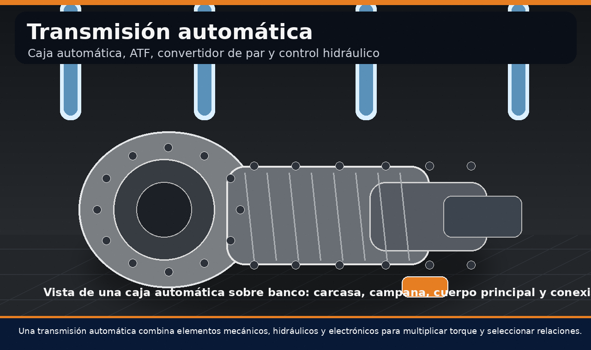
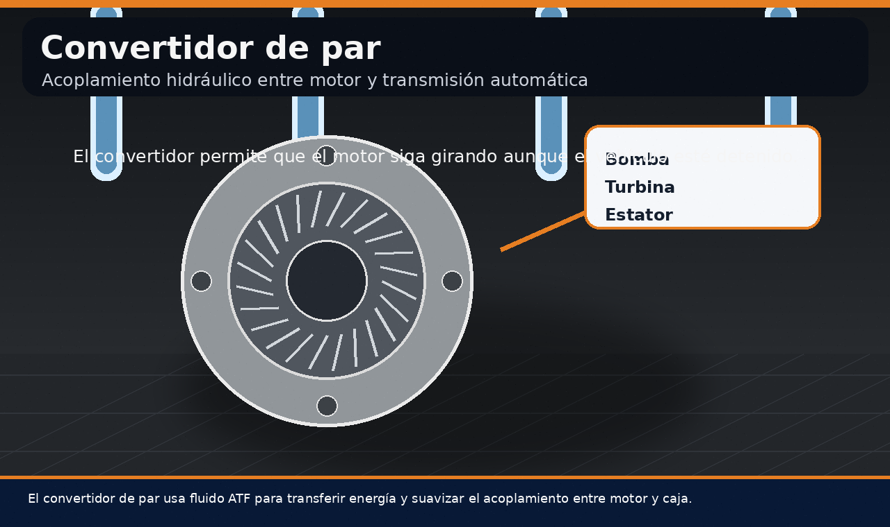
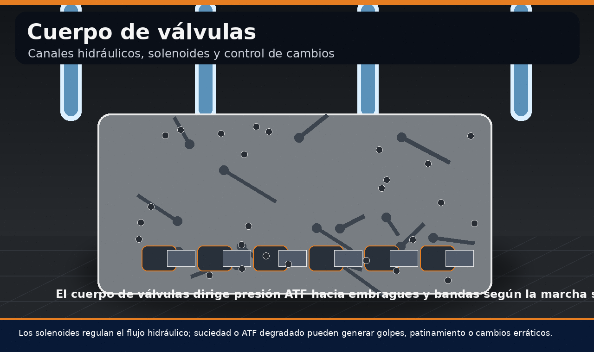
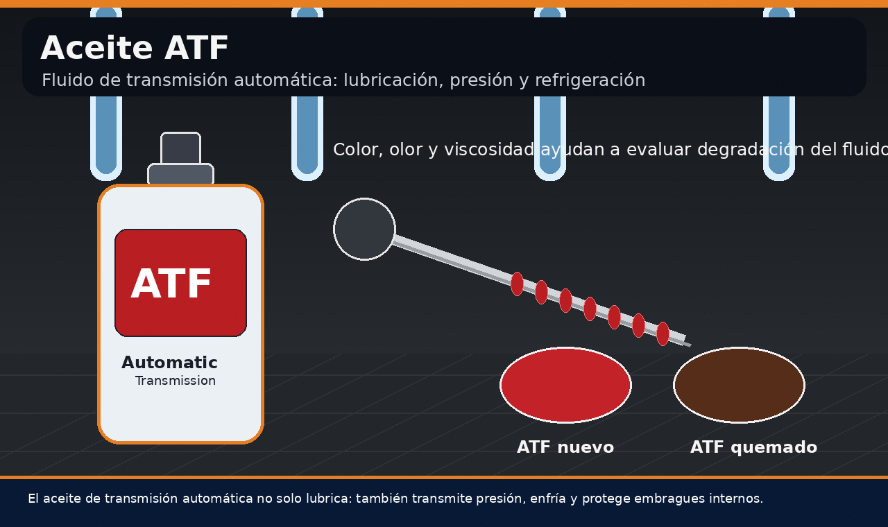
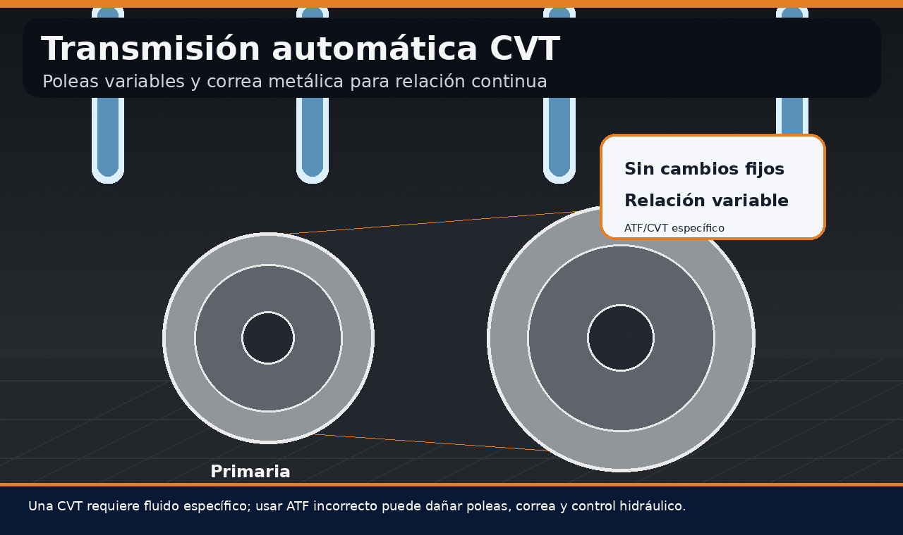
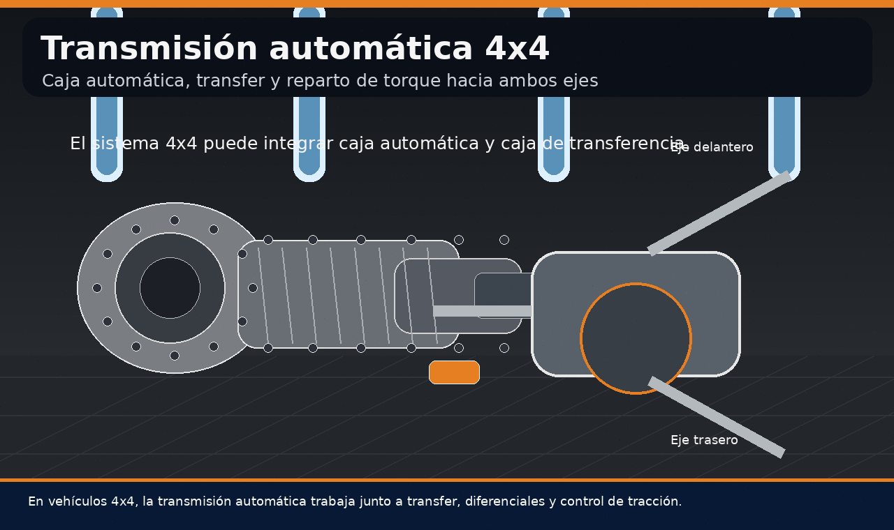
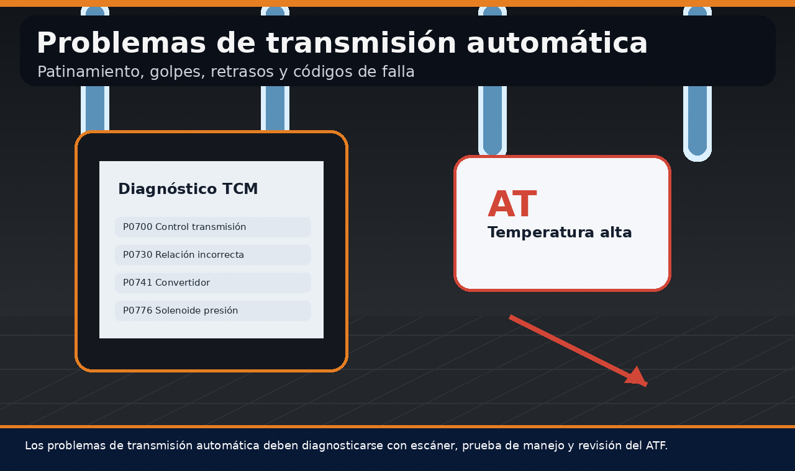
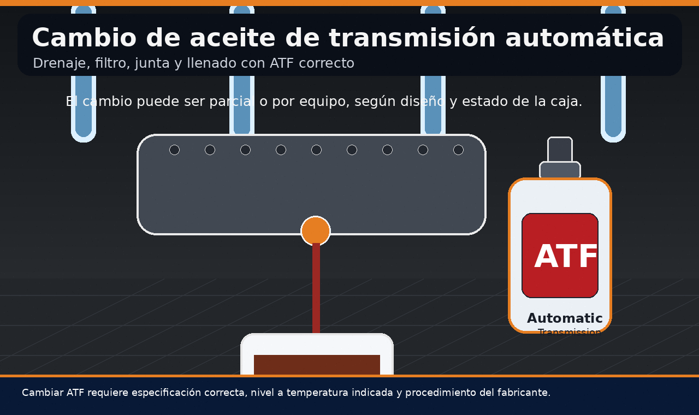
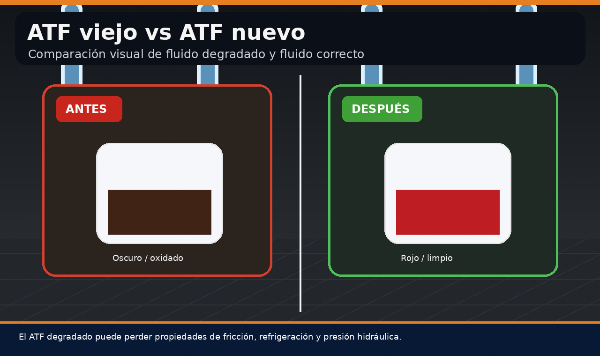

La transmisión automática es uno de los sistemas más complejos del vehículo moderno. Su función principal es transferir la potencia del motor hacia las ruedas, seleccionando automáticamente la relación adecuada según velocidad, carga, aceleración, temperatura y condiciones de manejo. A diferencia de una transmisión manual, donde el conductor acciona el embrague y selecciona marchas, la caja automática combina elementos mecánicos, hidráulicos, electrónicos y de control para realizar ese proceso sin intervención directa.
En esta guía se explica qué es una transmisión automática, cómo funciona, cuáles son sus partes principales, qué papel cumple el aceite ATF, cuándo conviene realizar cambio de aceite de transmisión automática, qué problemas pueden aparecer y por qué no todas las cajas automáticas trabajan igual. También se abordan temas buscados con frecuencia como transmisión automática precio, transmisión automática CVT, transmisión automática 4x4, transmisión automática moto, transmisión automática problemas y cuál es el mejor aceite para transmisión automática.

Contenido del artículo
- Capítulo 1: Qué es una transmisión automática
- Capítulo 2: Transmisión automática cómo funciona
- Capítulo 3: Transmisión automática partes principales
- Capítulo 4: Aceite de transmisión automática ATF
- Capítulo 5: Transmisión automática CVT y 4x4
- Capítulo 6: Problemas comunes de transmisión automática
- Capítulo 7: Cambio de aceite de transmisión automática
- Capítulo 8: Precio, mantenimiento y conclusión técnica
Capítulo 1: Qué es una Transmisión Automática
Una transmisión automática es un conjunto mecánico e hidráulico que permite adaptar la relación entre el giro del motor y el giro de las ruedas sin que el conductor tenga que seleccionar manualmente cada marcha. En lugar de utilizar un embrague convencional accionado por pedal, muchas cajas automáticas tradicionales emplean un convertidor de par, trenes epicicloidales, embragues internos, bandas, solenoides y un cuerpo de válvulas que administra presión hidráulica.
Su propósito es mantener el motor dentro de un rango eficiente de revoluciones mientras el vehículo acelera, circula a velocidad constante o sube pendientes. Cuando el sistema funciona correctamente, los cambios son suaves, progresivos y coordinados con la demanda del conductor. Cuando existe desgaste, bajo nivel de ATF, solenoides deficientes o presión hidráulica incorrecta, pueden aparecer golpes, patinamiento, retraso al engranar, vibraciones o códigos de falla.
La transmisión automática no debe entenderse como una sola pieza. Es un sistema completo. El precio de una transmisión automática, su mantenimiento y su reparación dependen del tipo de caja, disponibilidad de repuestos, nivel de daño, mano de obra, fluido requerido, programación electrónica y complejidad del vehículo.
Capítulo 2: Transmisión Automática Cómo Funciona
Para responder a la pregunta “transmisión automática cómo funciona”, hay que dividir el sistema en varias etapas. Primero, el motor entrega torque al convertidor de par. Luego, ese torque pasa hacia el conjunto interno de engranajes y embragues. Después, el cuerpo de válvulas y los solenoides dirigen presión ATF para activar o liberar elementos internos. Finalmente, la salida de la transmisión envía movimiento hacia los ejes y ruedas.
En una caja automática tradicional, el sistema decide qué relación usar según señales de sensores: posición del acelerador, velocidad del vehículo, carga del motor, temperatura del fluido, presión interna y modo de conducción. La unidad de control de transmisión o TCM interpreta esos datos y ordena cambios mediante solenoides. Esos solenoides no mueven engranajes directamente, sino que modifican el flujo hidráulico del aceite ATF.
El convertidor de par
El convertidor de par es una de las piezas más características de muchas transmisiones automáticas. Funciona como un acoplamiento hidráulico entre el motor y la caja. Su interior contiene bomba, turbina, estator y fluido ATF. Cuando el motor gira, la bomba impulsa fluido hacia la turbina, generando movimiento en la entrada de la transmisión.
Este sistema permite que el vehículo permanezca detenido con el motor encendido sin necesidad de embrague manual. También multiplica torque en determinadas condiciones de arranque. En muchos vehículos modernos, el convertidor incluye un embrague de bloqueo o lock-up que reduce pérdidas y mejora eficiencia cuando el vehículo ya está en marcha.

Si el convertidor falla, puede generar vibraciones, pérdida de fuerza, sobrecalentamiento, patinamiento, códigos relacionados con el embrague lock-up o sensación de falta de respuesta al acelerar. Por eso, al analizar problemas de transmisión automática, el convertidor debe considerarse como parte del diagnóstico y no solo como un componente secundario.
Capítulo 3: Transmisión Automática Partes Principales
La búsqueda “transmisión automática partes” suele aparecer cuando el usuario intenta entender qué hay dentro de la caja o por qué una reparación puede ser costosa. Una transmisión automática incluye muchas piezas de alta precisión: carcasa, campana, convertidor de par, bomba de aceite, trenes planetarios, embragues multidisco, bandas, cuerpo de válvulas, solenoides, sensores, filtro, cárter, juntas, retenes, eje de entrada y eje de salida.
Cada una de estas partes cumple una función concreta. La bomba genera presión de ATF. El cuerpo de válvulas distribuye esa presión. Los embragues internos conectan o desconectan elementos del tren planetario. Los solenoides controlan hidráulicamente el paso del fluido. Los sensores informan velocidad, temperatura y posición. El filtro retiene partículas. El cárter almacena parte del fluido. Cuando una de estas áreas falla, el síntoma puede sentirse como un golpe, retraso, patinamiento o marcha que no entra.
Cuerpo de válvulas y solenoides
El cuerpo de válvulas puede considerarse el cerebro hidráulico de la transmisión. Está formado por canales, válvulas, acumuladores y solenoides que administran el flujo del aceite ATF. Cuando la unidad electrónica ordena un cambio, los solenoides modifican la presión en circuitos específicos para activar embragues o bandas internas.
La suciedad, el ATF degradado, partículas de desgaste o una presión incorrecta pueden afectar el cuerpo de válvulas. Esto puede provocar cambios bruscos, retraso al pasar de parking a drive, golpes entre marchas, modo emergencia o códigos de solenoide. En muchos casos, una falla que parece mecánica puede tener origen hidráulico o electrónico.

Capítulo 4: Aceite de Transmisión Automática ATF
El aceite de transmisión automática, también llamado ATF por sus siglas en inglés, es mucho más que un lubricante. En una caja automática, el ATF lubrica engranajes, enfría componentes, transmite presión hidráulica, protege embragues, mantiene sellos y participa directamente en la calidad de los cambios. Por eso, cuando se busca “transmision automatica aceite” o “aceite de transmisión automática”, es importante entender que no se debe usar cualquier fluido.
Cada transmisión tiene una especificación concreta de ATF. Algunas requieren fluidos Dexron, Mercon, ATF+4, Toyota WS, Honda DW-1, Nissan Matic, CVT Fluid u otros estándares del fabricante. Elegir el fluido incorrecto puede afectar fricción, presión, temperatura y durabilidad. La pregunta “cuál es el mejor aceite para transmisión automática” no se responde con una marca universal, sino con la especificación correcta para esa caja.
Color, olor y estado del ATF
Un ATF nuevo suele presentar color rojo o rosado, aunque esto depende del fabricante. Con el tiempo puede oscurecerse por temperatura, oxidación y desgaste interno. Si el fluido huele quemado, está muy oscuro, contiene partículas metálicas o genera espuma, puede existir degradación avanzada o daño interno.
El aceite ATF viejo pierde capacidad de controlar fricción en embragues internos. Esto puede contribuir a patinamiento, golpes o cambios imprecisos. También pierde eficiencia térmica y puede acelerar el desgaste del cuerpo de válvulas, solenoides y bomba.

4.1 Aceite de transmisión 80w90: ¿sirve para automática?
Una búsqueda común es “aceite de transmisión 80w90”. Este tipo de aceite suele asociarse a diferenciales, cajas manuales o aplicaciones específicas de engranajes, no a la mayoría de transmisiones automáticas convencionales. Usar 80w90 en una caja automática diseñada para ATF puede causar fallas graves, porque su viscosidad, aditivos y comportamiento de fricción no corresponden al sistema hidráulico de una transmisión automática.
En resumen, el aceite correcto no se elige por intuición ni por viscosidad genérica. Se elige por especificación del fabricante. En transmisión automática, usar el fluido equivocado puede ser más dañino que no cambiarlo a tiempo.
Capítulo 5: Transmisión Automática CVT y 4x4
No todas las transmisiones automáticas funcionan igual. Una caja automática convencional con convertidor de par y trenes planetarios no es igual a una transmisión automática CVT. Tampoco trabaja igual una transmisión automática 4x4, donde además puede intervenir una caja de transferencia, diferenciales y sistemas de reparto de torque.
Transmisión automática CVT
Una transmisión automática CVT no utiliza marchas fijas tradicionales. En su lugar, emplea poleas de diámetro variable y una correa o cadena metálica que permite modificar la relación de forma continua. Esto puede mejorar suavidad y eficiencia, pero exige un fluido específico para CVT.
El aceite de una CVT no debe confundirse con ATF convencional. El fluido CVT debe soportar condiciones de fricción muy particulares entre poleas y correa. Usar un fluido incorrecto puede provocar patinamiento, vibración, sobrecalentamiento y desgaste prematuro.

Transmisión automática 4x4
En vehículos 4x4, la transmisión automática puede trabajar junto a una caja de transferencia encargada de repartir torque hacia el eje delantero, trasero o ambos. Esto añade complejidad al mantenimiento, ya que no solo debe considerarse el ATF de la caja, sino también fluidos de transfer, diferenciales y acoples.
Un problema de vibración, golpe o ruido en un sistema 4x4 no siempre proviene directamente de la transmisión automática. Puede estar relacionado con transfer, cardanes, diferenciales, soportes, sensores o diferencias de diámetro entre neumáticos. Por eso, el diagnóstico debe considerar el tren motriz completo.

Capítulo 6: Problemas Comunes de Transmisión Automática
Los problemas de transmisión automática pueden aparecer de forma progresiva o repentina. Algunos síntomas empiezan como pequeños retrasos al cambiar de marcha, mientras que otros se manifiestan como golpes fuertes, patinamiento, pérdida de tracción, modo emergencia o testigos encendidos. Lo importante es no ignorarlos, porque una falla leve puede convertirse en reparación costosa si se sigue conduciendo sin diagnóstico.
Síntomas frecuentes
Entre los síntomas comunes están cambios bruscos, demora al pasar de P a D, vibración al acelerar, olor a quemado, ATF oscuro, fuga de aceite, zumbidos, patinamiento entre marchas, revoluciones que suben sin aumento proporcional de velocidad y códigos de falla relacionados con solenoides o presión.
Un escáner puede revelar códigos como fallas de relación incorrecta, problemas de convertidor, errores de solenoide, temperatura alta o comunicación con el módulo TCM. Sin embargo, el escáner no reemplaza la prueba de manejo ni la inspección del fluido. El diagnóstico correcto combina información electrónica, evaluación hidráulica y revisión mecánica.

6.1 Por qué una transmisión automática golpea
Los golpes al cambiar pueden deberse a presión hidráulica incorrecta, solenoides defectuosos, soportes de motor o caja dañados, cuerpo de válvulas sucio, ATF incorrecto, embragues desgastados o adaptaciones electrónicas fuera de rango. En algunos casos, una reprogramación o reaprendizaje puede ayudar, pero si existe desgaste mecánico, el software no solucionará el problema de fondo.
6.2 Patinamiento y pérdida de fuerza
El patinamiento ocurre cuando los elementos internos no logran transmitir torque de forma firme. Puede deberse a bajo nivel de ATF, fluido degradado, embragues desgastados, presión insuficiente o falla de convertidor. Es un síntoma importante porque genera calor y acelera el deterioro de la caja.
Capítulo 7: Cambio de Aceite de Transmisión Automática
Una de las consultas más frecuentes es “cómo cambiar aceite de transmisión automática”. El procedimiento depende del diseño de la caja. Algunas transmisiones tienen varilla de medición, otras no. Algunas permiten drenaje por tapón, otras requieren desmontar cárter. Algunas llevan filtro reemplazable externo o interno. Y en muchas cajas modernas, el nivel debe verificarse a una temperatura específica con procedimiento indicado por el fabricante.
El cambio de aceite de transmisión automática puede ser parcial o completo. Un cambio parcial reemplaza solo una parte del ATF, generalmente el contenido del cárter. Un cambio por máquina puede renovar mayor cantidad de fluido, pero no siempre es recomendable en cajas con desgaste severo o mantenimiento desconocido. Por eso aparece la pregunta “por qué no es recomendable cambiar el aceite de transmisión” en ciertos casos. La respuesta no es que nunca se deba cambiar; el problema es hacerlo sin diagnóstico en una caja muy dañada, con ATF quemado y embragues ya desgastados.
Cómo cambiar aceite de transmisión automática con criterio
Antes de cambiar el ATF, se debe revisar color, olor, nivel, historial de mantenimiento, kilometraje, fugas y síntomas. Si el fluido está ligeramente degradado pero la caja funciona bien, un cambio preventivo puede ser beneficioso. Si el fluido está negro, huele a quemado y la transmisión ya patina, un cambio brusco puede revelar problemas internos existentes, porque el fluido viejo puede estar cargado de material de fricción.
En una intervención técnica se debe usar el fluido exacto, reemplazar filtro si aplica, limpiar el cárter, revisar imanes, cambiar junta, torquear tornillos correctamente y ajustar nivel a temperatura especificada. Llenar de más o de menos puede causar espuma, presión incorrecta, golpes o daño interno.

7.1 ¿Es recomendable cambiar el aceite de transmisión?
Sí, en la mayoría de los casos es recomendable cambiar el aceite de transmisión automática como mantenimiento preventivo, siempre que se use el fluido correcto y se siga el procedimiento adecuado. Lo que no es recomendable es esperar a que la transmisión falle y recién entonces intentar resolver todo con un cambio de aceite. El ATF no repara embragues quemados, solenoides dañados ni desgaste mecánico severo.
También existe la consulta “cambio de aceite de transmisión automática precio”. El precio depende de la cantidad de fluido, especificación ATF, filtro, junta, mano de obra, tipo de vehículo, si requiere escáner, si se desmonta cárter y si se realiza cambio parcial o completo. Por eso, el costo puede variar mucho entre un auto compacto, una camioneta 4x4 o una transmisión CVT.
ATF viejo vs ATF nuevo
El ATF nuevo conserva mejores propiedades de fricción, refrigeración y presión hidráulica. El ATF viejo puede oscurecerse, oxidarse y perder estabilidad térmica. La diferencia no siempre se nota de inmediato, pero sí influye en la vida útil de solenoides, embragues, bomba y cuerpo de válvulas.
Un cambio preventivo realizado a tiempo es muy distinto a un cambio tardío en una caja ya dañada. Por eso, el mantenimiento debe planificarse antes de que aparezcan golpes, patinamiento o códigos de falla.

Capítulo 8: Precio, Mantenimiento y Conclusión Técnica
La búsqueda “transmisión automática precio” puede referirse al costo de una caja completa, reparación, cambio de aceite, diagnóstico o mantenimiento. Una transmisión automática nueva o reconstruida puede tener un precio elevado porque contiene componentes de precisión y requiere instalación especializada. Una reparación puede ser más económica o más costosa según el daño: no es lo mismo cambiar un sensor que reconstruir embragues internos, convertidor, bomba y cuerpo de válvulas.
En el caso de transmisión automática moto o aceite de transmisión scooter, la situación cambia según el tipo de vehículo. Muchas scooters utilizan sistemas CVT con correa y variador, además de aceite en reductora final o transmisión secundaria. No debe asumirse que el aceite de una caja automática de automóvil sirve para una scooter. Siempre debe revisarse la especificación del fabricante.
8.1 Mantenimiento preventivo recomendado
- Revisar nivel de ATF: si el vehículo lo permite, verificar según temperatura y procedimiento correcto.
- Observar color y olor: ATF oscuro o quemado puede indicar degradación térmica.
- Usar fluido correcto: respetar especificación exacta del fabricante.
- Evitar sobrecalentamiento: revisar enfriador, radiador y fugas si hay temperatura elevada.
- Diagnosticar golpes: no asumir que todo se corrige con cambio de aceite.
- Cambiar filtro si aplica: algunos sistemas requieren desmontar cárter para reemplazarlo.
- Escanear códigos: revisar TCM si hay testigos o comportamiento irregular.
Una transmisión automática bien mantenida puede ofrecer suavidad, eficiencia y larga vida útil. Pero si se ignora el fluido, se usa aceite incorrecto, se conduce con sobrecalentamiento o se dejan avanzar síntomas de falla, el costo de reparación puede aumentar considerablemente.